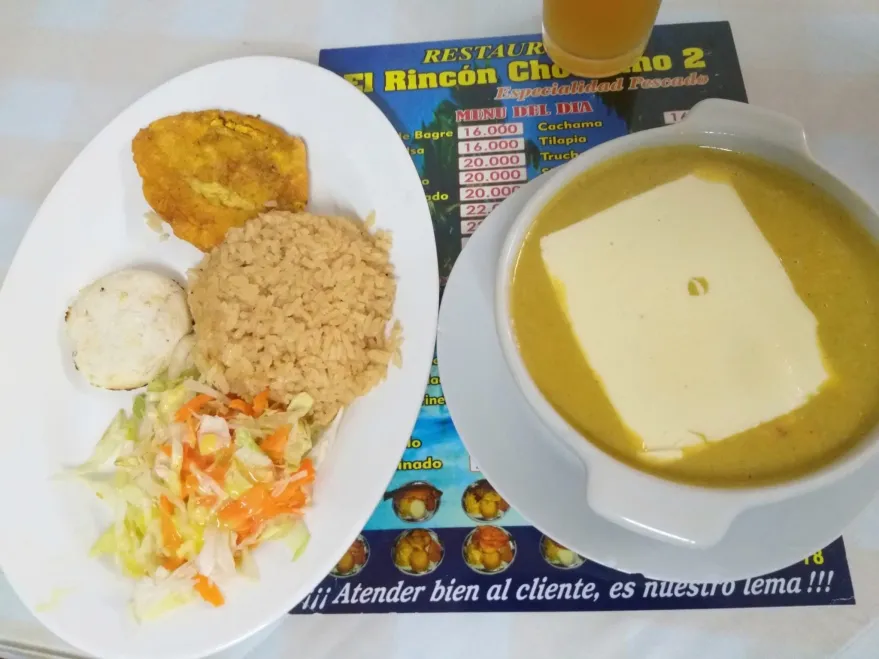

Seafood Casserole
A seafood casserole is a traditional Colombian dish, especially popular in coastal regions. It consists of a combination of seafood, often including fish, shrimp, clams, among others, cooked in a flavorful broth, generally made with vegetables, spices, and, in some cases, coconut milk.
Price: 50.000